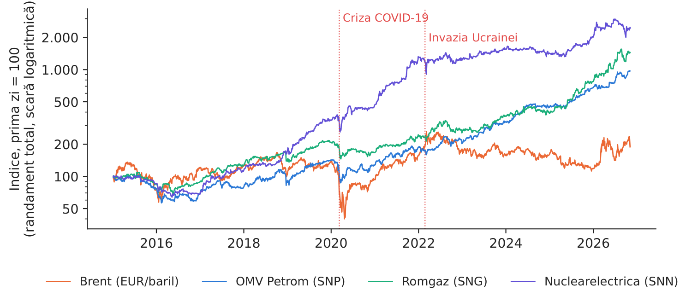
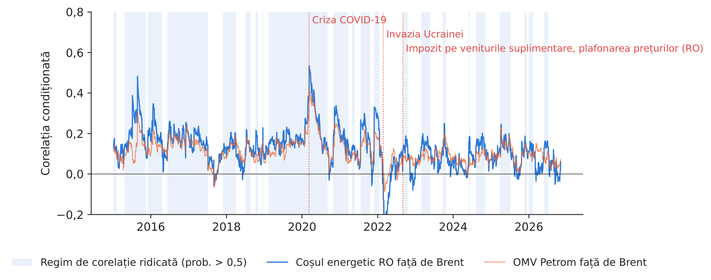
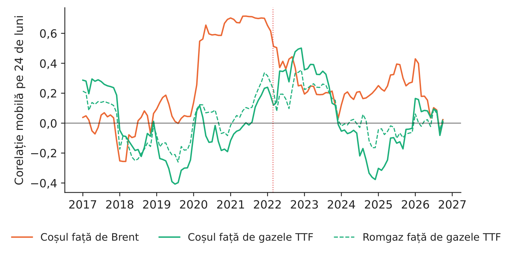
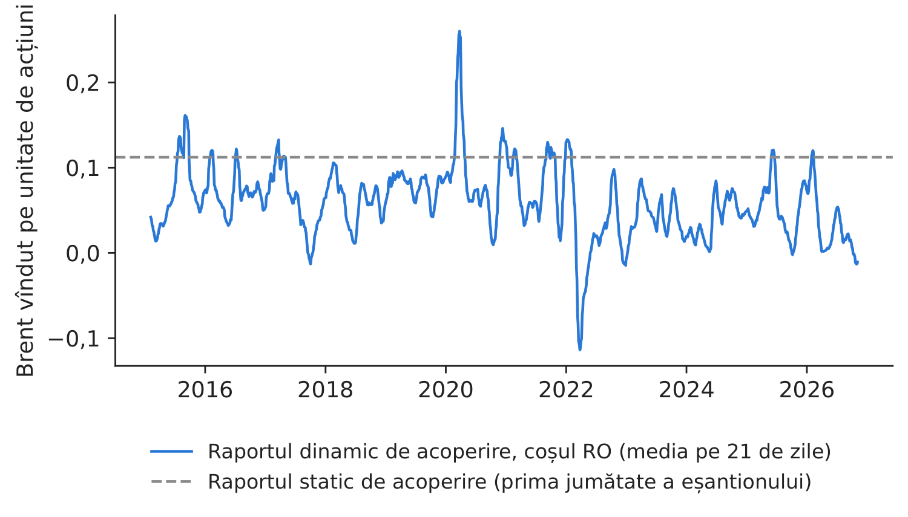

Studiul de caz 3 · Cursul 3
Evoluează acțiunile companiilor energetice românești în același sens cu petrolul? Corelația variabilă în timp și acoperirea riscului
Prof. dr. Daniel Traian PELE
Academia de Studii Economice din București, Departamentul de Statistică și Econometrie
Academia Română, Institutul de Prognoză Economică
Lucrarea de referință
Grecu, R. A., Cramer, A. A., Pele, D. T. și Lessmann, S. (2025). The link between energy prices and stock markets in European Union countries. The North American Journal of Economics and Finance, 78, 102420. doi:10.1016/j.najef.2025.102420
Materiale
Problema decizională
Trezoreria unui grup energetic din România deține un portofoliu de acțiuni ale unor companii energetice listate (OMV Petrom, Romgaz, Nuclearelectrica), iar un fond de pensii deține aceleași acțiuni în numele participanților. După șocurile de pe piața petrolului din 2020 și 2022, comitetul de risc formulează două întrebări. Este legătura dintre aceste acțiuni și prețul petrolului stabilă sau se modifică în perioadele de criză? Putem reduce riscul poziției prin vînzarea de contracte futures pe Brent? De răspuns depinde dacă comitetul aprobă un program de acoperire a riscului cu instrumente pe mărfuri sau se bazează pe diversificare.
Lucrarea de referință
Întrebarea de cercetare. Cum influențează variațiile prețurilor petrolului și gazelor naturale randamentele principalilor indici bursieri din cele 27 de state ale Uniunii Europene (UE) și diferă această legătură în funcție de regiune (Europa Centrală și de Est, ECE; Nord; Sud; Vest) și de nivelul de industrializare (rezumat; introducere)?
Datele. 27 de indici bursieri naționali (inclusiv indicele BET, Bucharest Exchange Trading, indicele principal al Bursei de Valori București al Bursei de Valori București), contracte futures generice pe Brent și pe gazele naturale europene (TTF, Title Transfer Facility), Bloomberg, 2010–2023; date zilnice pentru corelații și date trimestriale pentru analiza șocurilor (secțiunea 3.1, Tabelul 1).
Metoda. Modelul DCC-GARCH (corelație condiționată dinamică, cu heteroscedasticitate condiționată autoregresivă generalizată) pentru corelația zilnică; un model Markov cu două regimuri estimat pe această corelație; funcții de răspuns la impuls dintr-un model TVP-VAR (model vectorial autoregresiv cu parametri variabili în timp) la șocurile prețurilor petrolului și gazelor.
Principalele rezultate ale lucrării.
- Corelația cu petrolul a fost în general pozitivă, de regulă între 0 și 0,4, iar indicele regiunii ECE a fost, în medie, cel mai slab corelat (secțiunea 4.1). Pentru ECE, valoarea maximă a fost de 0,53 (2020), iar cea minimă de \(-0{,}11\) (2022) (Tabelul 2).
- Regimurile sînt persistente: probabilitatea de a rămîne în același regim depășește 98 % în toate regiunile UE (secțiunea 4.1, Tabelul 4).
- Gazele naturale: corelațiile se situează în general între \(-0{,}3\) și 0,2; după invadarea Ucrainei de către Rusia, corelația indicelui ECE cu prețul gazelor a coborît sub \(-0{,}4\) (secțiunea 4.1, Tabelul 5).
- Piețele de capital europene sînt mai strîns legate de evoluția prețului petrolului decît de cea a prețului gazelor; în țările mai industrializate, legătura cu petrolul este mai puternică (concluzii; Tabelul 8).
Numerotarea secțiunilor și a tabelelor urmează manuscrisul revizuit al autorilor; articolul publicat (acces deschis, CC, Creative Commons BY) poate avea altă paginare.
Metoda, pas cu pas
Intuiția metodei
O singură corelație, calculată pe zece ani, ascunde tocmai ceea ce contează pentru un manager de risc: într-un crah bursier toate acțiunile scad simultan, iar în perioadele liniștite evoluează mai independent. Modelul DCC-GARCH furnizează o corelație pentru fiecare zi, actualizată la fiecare nou randament; modelul Markov stabilește apoi dacă această corelație zilnică se află într-un regim „ridicat” sau „scăzut” și cît de des trece dintr-un regim în altul.
Fie \(r_{i,t}\) randamentul logaritmic zilnic al activului \(i\) (%). În primul pas se estimează un model GARCH(1,1) pentru fiecare serie de randamente, \(\sigma^2_{i,t}=\omega_i+\alpha_i\varepsilon^2_{i,t-1}+\beta_i\sigma^2_{i,t-1}\), iar reziduurile se standardizează: \(z_{i,t}=\varepsilon_{i,t}/\sigma_{i,t}\). În al doilea pas (DCC) se actualizează o matrice de „cvasicorelații” \(Q_t=(1-a-b)\bar Q+a\,\mathbf z_{t-1}\mathbf z_{t-1}'+b\,Q_{t-1}\), unde \(\bar Q\) este matricea de corelație necondiționată a reziduurilor \(z\), \(a\) măsoară reacția la informațiile noi, iar \(b\) persistența (\(a,b\ge0\), \(a+b<1\)); corelația condiționată este \(\rho_t=Q_{12,t}/\sqrt{Q_{11,t}Q_{22,t}}\). În al treilea pas (modelul Markov) se scrie \(\rho_t=\mu_{s_t}+u_t\), unde regimul neobservat \(s_t\in\{H,L\}\) urmează un lanț Markov cu probabilitățile \(p_{HH}=\Pr(s_t=H\mid s_{t-1}=H)\) și \(p_{LL}\); \(1/(1-p_{HH})\) este durata medie, în zile, a regimului ridicat. Pentru acoperirea riscului, vînzarea a \(h\) unități de Brent pentru fiecare unitate de acțiuni conduce la randamentul \(r_s-h\,r_b\); varianța acestuia este minimă pentru \(h^*=\rho\,\sigma_s/\sigma_b\), iar modelul DCC oferă un raport zilnic \(h^*_t=\rho_t\sigma_{s,t}/\sigma_{b,t}\).
În practică
Acoperirea riscului este eficientă numai dacă corelația este ridicată și stabilă. La o corelație de 0,1–0,2, chiar și acoperirea optimă elimină cel mult \(\rho^2\approx1\)–4 % din varianță — un cîștig care nu justifică apelurile în marjă și riscul de bază.
Replicare pe datele cursului
Notebook-ul C3_notebook_RO.ipynb folosește prețurile de închidere ajustate pentru dividende ale acțiunilor SNP, SNG și SNN (EODHD, EOD Historical Data, furnizor de date de piață) și prețul Brent în EUR (Yahoo Finance, BCE, Banca Centrală Europeană), 06.01.2015 – 04.11.2026, 2.860 de zile de tranzacționare comune; construim un „coș energetic RO [România]” cu ponderi egale.
Față de lucrare, implementarea de la curs folosește trei companii în locul celor 27 de indici, perioada 2015–2026 în locul perioadei 2010–2023 și, pentru gaze, prețul TTF lunar (Banca Mondială), deoarece seria zilnică TTF nu este disponibilă gratuit.

Figura 1. Indicii de randament total ai celor trei acțiuni și prețul Brent (scară logaritmică).
Sursa: EODHD; Yahoo Finance; 06.01.2015–04.11.2026.

Figura 2. Corelația DCC cu Brent; zona evidențiată: regimul de corelație ridicată.
Sursa: estimările noastre DCC-GARCH și Markov.
Tabelul 1. Corelația DCC cu Brent și regimurile Markov (\(p_{HH}\), \(p_{LL}\): probabilitatea de a rămîne în regimul ridicat, respectiv scăzut). Cea mai mare valoare este marcată cu aldine.
| Serie față de Brent | Media | Max | Anul | Min | Anul | Regim ridicat | Regim scăzut | \(p_{HH}\) | \(p_{LL}\) |
|---|---|---|---|---|---|---|---|---|---|
| OMV Petrom (SNP) | 0,11 | 0,42 | 2020 | \(-\)0,09 | 2022 | 0,158 | 0,079 | 0,9828 | 0,9876 |
| Romgaz (SNG) | 0,10 | 0,43 | 2015 | \(-\)0,11 | 2022 | 0,146 | 0,079 | 0,9830 | 0,9897 |
| Nuclearelectrica (SNN) | 0,08 | 0,49 | 2020 | \(-\)0,32 | 2022 | 0,081 | 0,077 | 0,9759 | 0,9461 |
| Coșul energetic RO | 0,13 | 0,54 | 2020 | \(-\)0,32 | 2022 | 0,187 | 0,050 | 0,9855 | 0,9823 |
Sursa: calcule proprii; date zilnice 06.01.2015–04.11.2026. În lucrare, pentru regiunea ECE față de petrol: max 0,53 (2020), min \(-0{,}11\) (2022), regimuri 0,2553 / 0,1201, \(p_{00}=0{,}9875\), \(p_{11}=0{,}9904\) (Tabelele 2–4).
Ce arată datele. Corelația coșului cu Brent are media 0,13, atinge maximul, 0,54, în 2020 și minimul, \(-\)0,32, în 2022 — aceeași cronologie ca la indicele ECE din lucrare (max 0,53 în 2020, min \(-0{,}11\) în 2022). Parametrii DCC (\(a = 0,0210\), \(b = 0,9496\)) indică o corelație care reacționează lent la informațiile noi și este foarte persistentă. Modelul Markov identifică un regim ridicat, cu media 0,187, și unul scăzut, cu media 0,050, ambele de lungă durată (\(p_{HH} = 0,9855\), \(p_{LL} = 0,9823\)); în regimul ridicat, șocurile prețului petrolului antrenează cele trei acțiuni vizibil mai mult în aceeași direcție. Pe date lunare, coșul este mai corelat cu Brent (0,28) decît cu prețul gazelor TTF (0,09); chiar și Romgaz, producător de gaze naturale, are o corelație de numai 0,10 cu TTF — în condițiile plafonării prețurilor și ale supraimpozitării din România din perioada 2022–2025, prețul gazelor nu s-a regăsit în profiturile companiei.

Figura 3. Corelația mobilă pe 24 de luni cu Brent și cu prețul gazelor TTF.
Sursa: Banca Mondială (TTF), EODHD, Yahoo Finance; date lunare 2015–2026.

Figura 4. Raportul de acoperire cu varianță minimă: dinamic (DCC) și static.
Sursa: estimările noastre.
Tabelul 2. Acoperirea cu Brent în afara eșantionului de estimare (după 12.2020, 1.429 de zile de tranzacționare): reducerea varianței poziției acoperite. Cea mai bună valoare este marcată cu aldine.
| Poziția | \(h\) static | \(h_t\) dinamic, media | Reducerea varianței, acoperire statică, % | Reducerea varianței, acoperire dinamică, % |
|---|---|---|---|---|
| Coșul energetic RO | 0,112 | 0,090 | \(-\)6,9 | \(-\)1,7 |
| OMV Petrom (SNP) | 0,138 | 0,108 | \(-\)6,4 | \(-\)2,8 |
| Romgaz (SNG) | 0,099 | 0,128 | \(-\)2,7 | \(-\)2,8 |
| Nuclearelectrica (SNN) | 0,099 | 0,099 | \(-\)3,7 | \(-\)0,5 |
Sursa: calcule proprii; o valoare negativă înseamnă că acoperirea a mărit riscul.
Cifra relevantă pentru decizie. În afara eșantionului de estimare (parametrii GARCH și DCC sînt estimați numai pe prima jumătate a eșantionului), acoperirea statică cu Brent a redus varianța coșului cu \(-\)6,9 %, iar acoperirea dinamică DCC cu \(-\)1,7 % (o valoare negativă înseamnă că acoperirea a mărit varianța) — nicio reducere a riscului. Contractele futures pe Brent nu sînt un instrument util de acoperire pentru acțiunile energetice românești: riscul acestora provine din reglementarea internă, din politica de dividende și din piața locală, nu din prețul petrolului.
Întrebări pentru discuție
- Lucrarea arată că indicele ECE este cel mai slab corelat cu petrolul. Ce caracteristici ale pieței românești (acționariatul de stat, reglementarea, lichiditatea) ar putea explica acest rezultat?
- Corelația a devenit negativă în 2022, exact cînd prețul petrolului a crescut puternic. De ce ar putea scădea acțiunile companiilor petroliere atunci cînd prețul petrolului crește?
- Dacă acoperirea nu reduce riscul, ce alte instrumente sau politici ați folosi pentru a gestiona riscul acestui portofoliu?
- Regimul de corelație ridicată durează, în medie, \(1/(1-p_{HH})\) zile. Cum ați folosi această valoare într-o politică de limite de risc?
- V-ați aștepta ca acțiunile Hidroelectrica (listate în 2023) să fie legate de prețul petrolului, de cel al gazelor, de prețul energiei electrice sau de precipitații? Cum ați testa această ipoteză?
Limitele replicării
(i) Replicarea noastră are un caracter explicativ; nu este un instrument de prognoză. (ii) Trei companii formează un eșantion mic, puternic influențat de reglementare, nu un indice de piață; indicele BET nu se află în datele cursului. (iii) Zilele de tranzacționare de la Bursa de Valori București și de la ICE (Intercontinental Exchange) nu coincid; randamentele de după zilele libere acoperă mai multe zile. (iv) Analiza pentru gaze folosește date lunare, iar TTF este o medie lunară publicată de Banca Mondială și convertită, nu un preț zilnic de tranzacționare. (v) Modelul Markov folosit permite o varianță diferită în fiecare regim, astfel că regimurile „ridicat” și „scăzut” sînt, în parte, și regimuri de volatilitate.
Studiul de caz 3 pe scurt
- ÎntrebareEste stabilă legătura dintre acțiunile energetice românești și petrol și reduce acoperirea cu Brent riscul?
- DateSNP, SNG, SNN și Brent (EUR), date zilnice 2015–2026; TTF lunar.
- MetodăGARCH + corelație DCC zilnică; model Markov cu 2 regimuri; acoperire cu varianță minimă.
- RezultatCorelația medie 0,13; max 0,54 (2020), min \(-\)0,32 (2022) — la fel ca indicele ECE din lucrare.
- DecizieNu acoperiți acțiunile cu Brent: reducerea varianței în afara eșantionului este de \(-\)1,7 % (o valoare negativă înseamnă risc mai mare). Gestionați riscul de reglementare și riscul pieței locale.

Sursa: estimarea noastră DCC-GARCH pe date EODHD și Yahoo Finance, 06.01.2015–04.11.2026.
Abrevieri
| BCE | Banca Centrală Europeană |
|---|---|
| BET | Bucharest Exchange Trading, indicele principal al Bursei de Valori București |
| CC | Creative Commons |
| DCC | corelație condiționată dinamică |
| DCC-GARCH | model GARCH cu corelație condiționată dinamică |
| ECE | Europa Centrală și de Est |
| EODHD | EOD Historical Data, furnizor de date de piață |
| GARCH | heteroscedasticitate condiționată autoregresivă generalizată |
| ICE | Intercontinental Exchange |
| RO | România |
| SNG | simbolul bursier al Romgaz |
| SNN | simbolul bursier al Nuclearelectrica |
| SNP | simbolul bursier al OMV Petrom |
| TTF | Title Transfer Facility |
| TVP-VAR | model vectorial autoregresiv cu parametri variabili în timp |
| UE | Uniunea Europeană |
Textul, cifrele, graficele și tabelele acestei pagini sînt cele ale studiului de caz; toate cifrele sînt calculate de notebook-ul studiului pe datele cursului.